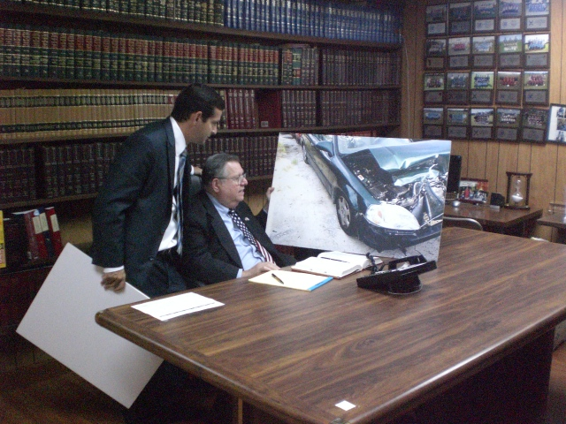

PRACTICE AREAS
Personal Injury
My firm represents individuals who have been injured as a result of automobile accidents, slips, trips, falls, dog bites, or any type of negligence. Whether it be a neck, back or knee sprain or a ligament tear, herniated disc, loss of limb or death, my offices can and will handle your claim. We will process your claim and if necessary, file a lawsuit against the responsible parties and seek compensation for your injury, pain, and suffering (physical, mental and emotional) and loss of earnings due to your loss and injury. We will give you and your claim the serious, considerable and personal attention it deserves.
Criminal/Traffic/DUI
My firm has extensive experience defending the rights of people arrested and accused of criminal offenses. We handle criminal cases such as DUI, License suspensions, serious felony cases, such as theft, fraud, drug possession, embezzlement, sex offenses, conspiracy and Medicare and Medicaid cases. We will give you AND your family the advice, consultation, support and legal knowledge that you need and desire.
Business Litigation
My firm has handled all types of business disputes over the years. Whether it be collecting on a debt or past due invoices, a dispute between partners and shareholders or a contract or agreement that is in dispute, we can assist you. If the dispute cannot be resolved amicably, by mediation or a settlement conference, the matter will be litigated in Court as quickly and as efficiently as possible.
Family Law
My firm handles a full range of Family Law matters including adoption, divorce, separation, premarital agreements, paternity, custody, relocation, and support. We will give your case, whether it be for alimony, child support, parental relocation or other issues all of the attention necessary for you and/or your children to feel comfortable with the process and to give you and your family some peace of mind that you have someone on your side during these difficult times.
Estate/Probate/Guardianship
Probate is the legal process by which a person’s assets are distributed after death. Whether your loved one died with a Will (Testate) or without a Will (Intestate), my firm can and will represent you. The Court will appoint a personal representative (executor) to administer the Will in accordance with its provisions or in accordance with Florida Law if there is no Will. My firm can and will represent the Personal Representative in the entire Probate process including, but not limited to, filing the Petition for Administration and the various other initial documents, Petition to Determine Homestead, Petition to Determine Exempt Property, Claim objections and all Petitions necessary to marshall and gather all of the decedent’s assets. My firm will also investigate and determine which debts must be paid and will also protect assets from creditors that are exempt from claims of creditors and then will proceed to close the estate as quickly and efficiently as possible.
Guardianship is a legal proceeding in which a guardian is appointed by the Court that then exercises the legal rights for another individual called a Ward. A guardian may be appointed by the courts when an individual has been declared incapacitated because of age, illness, or injury. A court may also appoint a guardian for an individual who seems likely to be cheated or taken advantage of by others due to illness, incapacity, or age. If you feel one of your loved ones is incapacitated or someone you know is incapacitated, my firm has the expertise and knowledge to assist you in establishing a guardianship. The Court will appoint a committee to evaluate the individual and they will make findings and recommendations to the Court as to their incapacity or capacity to handle different tasks. The Court can issue a plenary guardianship which is a full guardianship over the person and/or property of the ward or the Court may issue a limited guardianship which is where the guardian is responsible for specific areas of care but not all. All decisions regarding the Ward will be determined by the Guardian as then approved by the Court including personal decisions and financial decisions, depending on the type of Guardianship approved by the Court.
Foreclosure Defense My firm represents individuals and families who are facing foreclosure of their home. Whether you are behind on your mortgage or the mortgage company has miscalculated what is due and owing, my firm has the experience and knowledge to assist you during this difficult time. We can provide a defense to the foreclosure lawsuit depending on the facts of the case and we can assist you with other issues such as loan modifications, deed in lieu of foreclosures, deficiency judgments, and short sales. If you have been served with a lawsuit, immediately contact my office. Do not delay! You only have 20 days after service of the summons and complaint upon you to file a response to the lawsuit to protect your rights, or you will be in default. Contact my office immediately and we will assist you with these matters if you so request it.
